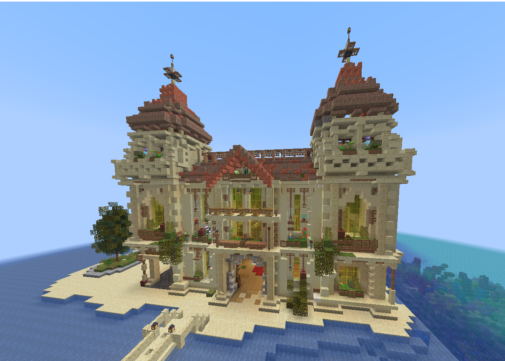
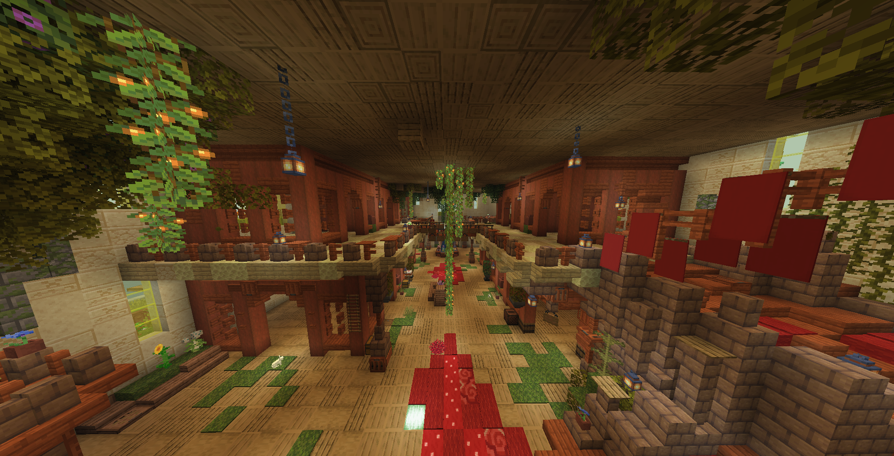

Экономика и торговля
Экономика сервера полностью в руках игроков. Здесь нет серверного магазина, фиксированных цен и единой валюты — основа всего это бартер, а стоимость вещей определяет сам рынок.
Как это работает
- Нет общей валюты, которая определяла бы стоимость всего. Игроки сами решают, что и почём.
- Цены договорные. Один и тот же предмет стоит по-разному — всё зависит от спроса и переговоров.
- Ценность создаёт редкость. Материалы боссов, кастомные предметы и ресурсы эндгейма ценятся выше всего.
Торговый Центр (ТЦ)
Главное место торговли — Торговый Центр на одном из островов города. Любой игрок может разместить здесь собственный магазин и выставить товар.


Сделки вне ТЦ
Прямой бартер «с рук» вне Торгового Центра строится на доверии. Здесь обман уже возможен — и если вас обманули при такой сделке, это мошенничество, которое можно вынести на Суд. Кражи у мирных игроков также разбираются судом.
Роль мирных игроков
Мирные игроки — двигатель экономики: они добывают ресурсы, производят товары и держат магазины, не отвлекаясь на войны. Боевые фракции снабжают рынок добычей с боссов и аванпостов.